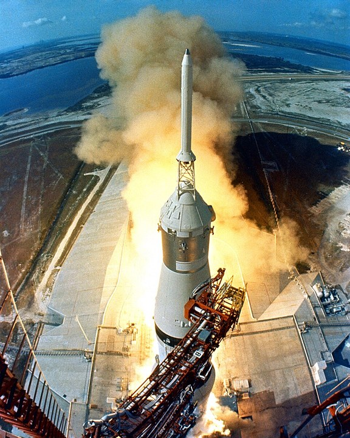
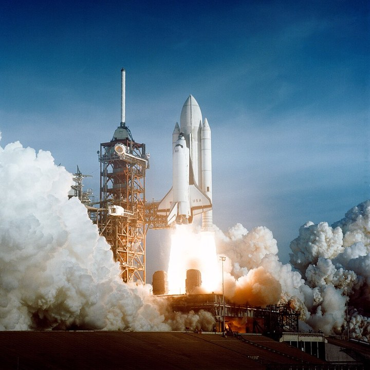
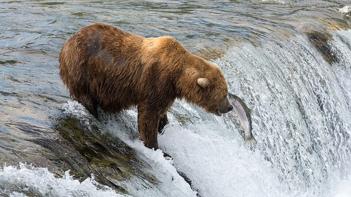
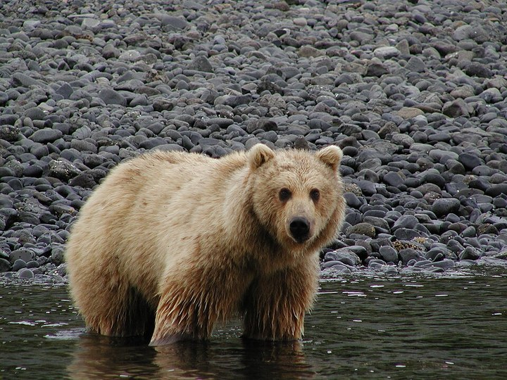
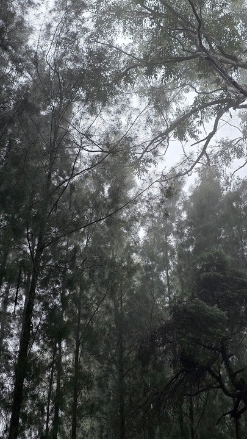
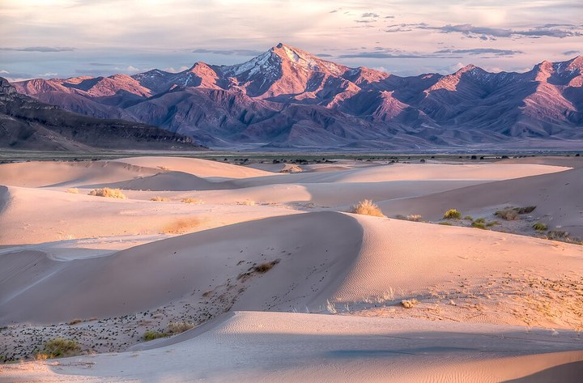

Model: gpt-5.6-terra; detail: low; calls: 6/6/0; cost: 0.11225
Classification accuracy: 0.666667; structured validity: 1.0
| Scene | Candidate | Expected | Returned | Score | Confidence | Status | Request ID | Frame | Evidence |
|---|---|---|---|---|---|---|---|---|---|
| scene_01_strict_saturn_v | scene01_A_saturn_v_launch | suitable | review | 0.74 | 0.96 | success | req_45e31fbbde6b4b3e83f08a65a48c34b7 |  | Large white launch vehicle visibly matches the characteristic overall form of a Saturn V more closely than a Space Shuttle stack. |
| scene_01_strict_saturn_v | scene01_B_space_shuttle_launch | unsuitable | unsuitable | 0.666667 | 0.99 | success | req_c32868f85e614c00a781680aa68514ed |  | Vehicle geometry visibly matches a Space Shuttle configuration—orbiter, external tank, and twin solid rocket boosters—and does not match Saturn V. |
| scene_02_balanced_bear_salmon | scene02_A_bear_catching_salmon | suitable | suitable | 1.0 | 0.98 | success | req_43b791f57a944661a0a2811f45748bed |  | A brown bear is clearly visible as the primary subject. |
| scene_02_balanced_bear_salmon | scene02_B_bear_standing_river | review | review | 0.666667 | 0.96 | success | req_55528c7158ea4bd8bf338762afdd44d0 |  | A single brown-furred bear is centered in the frame. |
| scene_03_illustrative_forest_broll | scene03_A_misty_forest_canopy | suitable | review | 0.74 | 0.95 | success | req_8c52842301c041cfab199503065db2c0 |  | A dense stand of trees and leafy canopy is visibly present throughout the frame. |
| scene_03_illustrative_forest_broll | scene03_B_desert_dunes | unsuitable | unsuitable | 0.5 | 0.99 | success | req_6d1a623c2c7041708c0bd976f06e89ee |  | No trees or forest canopy are visible; the primary visible subject is a dune landscape. |